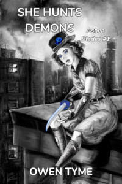

Tymely News
Character Feature: Clayton Simmons

An AI generated image of Simmons from 1945, in his favorite gray suit.

Clayton Simmons is the private investigator partner of Little Miss Secret, in my novel She Hunts Demons. He affectionately calls her 'the boss', because she's been a part of their agency longer than he has, though she actually plays the role of muscle, while he's the brains and face of the operation.
Simmons is an operative of a secretive demon-hunting organization known as the Order of Ash and Smoke, who've been hunting demons and protecting humanity for centuries. Members of this organization are known as Ashen Blades.
Simmons became an Ashen Blade when his wife was consumed by a demon from the inside out as a result of her addiction to alcohol. On gaining control of his wife's body, the demon tried to kill Simmons, leaving him with a limp doctors couldn't fix, that forces him to walk with a cane.
As a result of his last-minute rescue by Ashen Blades that had used the power of a witch to finger his wife as a potential demon, Simmons volunteered to become part of the Order, because he wanted to know the real truth of what happened to his wife.
His limp initially precludes him from active combat duty and he was instead assigned to be Little Miss Secret's handler, a job that mostly consists of keeping an eye on her, because the Order knows she's a half-demon and is therefore wary of her, despite her lengthy list of demon kills, both on and off the record.
His day to day responsibilities mostly consist of doing things the girl has a hard time doing for herself, since she's functionally mute, including buying things she needs, such as an occasional pair of new shoes and ammunition for her guns. On one notable occasion, he helped her purchase a Japanese Wakizashi from a pawn shop, which they got very cheap, because the country was at war with Japan at the time. That sword is one of her favorite weapons.
As a result of how closely they work together and the emotional bond they form in the midst of her telling him her origin story through crayon drawings, Simmons and Little Miss Secret have a relationship somewhat akin to father and daughter. Simmons feels deeply protective of Little Miss Secret and she feels much the same for him, but for the early portions of the novel, she refuses to allow him to accompany her into combat, but not because of his injury, being more concerned by the fact that he's merely human.
As it turns out, she lost her last partner because he followed her into combat when he shouldn't have and she feels responsible for failing to protect him, so she's even more protective of Simmons, choosing to walk into a trap without him, to avoid risking his life. Being the good detective he is, Simmons soon realizes the truth and follows her, anyway.
In their first encounter with the villain of the story, Otto Vogerath, Simmons is nearly beaten to death by the demon, leaving him with multiple broken bones and an excess of bruises.
Seeing how badly injured he got, but nonetheless sensing the potential of Simmons, Mashu'ra, the kitten demon that hides in Little Miss Secret's hat, offers Simmons an unusual deal: if he lets the little imp partially possess his body, Simmons will have the strength, durability and healing power of a demon, but Simmons will be in great pain. In exchange, Mashu'ra will feed on his suffering and use the energy it gives him to empower Simmons to fight, incidentally getting the little demon some revenge on demon-kind for killing his Master, who happened to be Little Miss Secret's mother.
Simmons takes the deal and Mashu'ra tells him his true name, giving Simmons the power to call on the kitten demon's power whenever he likes. The little demon also gives him his first lessons in magic. As it turns out, Simmons is from a forgotten off-shoot of a family of witches, but because his power doesn't come out of its own accord, Mashu'ra teaches him the wizard's path to magic, which is all pain and hard work, for very little effect.
In his next encounter with Vogerath, Simmons turns the table and becomes exactly the bull in a china shop that Little Miss Secret needs by her side, finally making them equal partners.
Tags: ashen-blades, character-feature